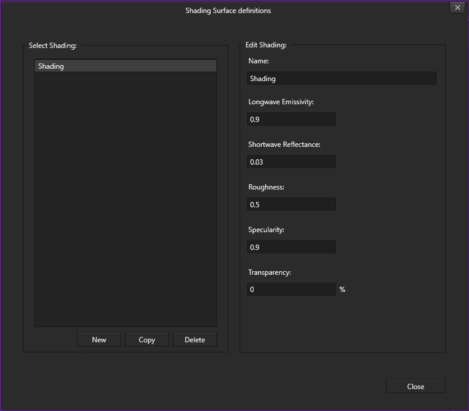
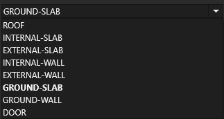
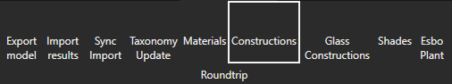
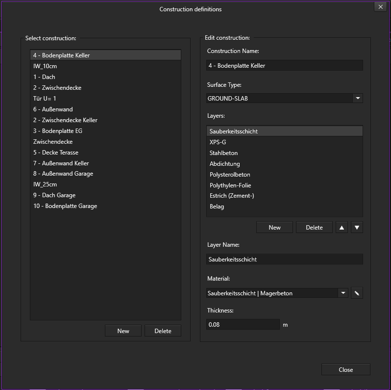

Setting up a problem#
A short overview of the representation of the data in the data model will be given in the beginning.
Datastructure for the plugin#
In Fig. 3 a simplified depiction of the needed datastructure to run the plugin is given. This data structure holds all the necessary information to enable simplified dynamic multizone climate and energy simulations in IDA-ICE

Fig. 3 Simplified depiction of the needed datastructure to run the plugin is given.#
A more in depth look into the SIMULTAN representation of the data for building physics simulations is given in the chapter SIMULTAN Datastructure to incorporate the IDA-ICE Data model .
Warning
Although this data structure can be implemented manually, it is strongly recommended to use the provided templates and export them to existing models or adjust them as needed. Manuel modelling is always prone to errors and could result in very time consuming efforts when trying to fix those.
Geometrical modelling#
The geometry is created in the Geometry Editor of the SIMULTAN Editor. Please consult the SIMULTAN Editor User Guide for further information on how to use this Geometry Editor. Or watch our Videos on YouTube.
Modelling guidelines#
Important
Either import or start with the provided template file template_esbo_and_shades.simultan. All the necessary datastructure to operate the
IDA-ICE-plugin will be provided there.
In Fig. 4 it can be seen that the plugin uses a reference geometry (white) for the dynamic simulation. The reference geometry, representing the outer building envelope, can for example be an architectural model or a designated model used for the building physics simulations.

Fig. 4 Example of the geometry of a Tiny House modelled with the Geometry Editor of the SIMULTAN Editor.#
For the simulation the reference geometry is exported to IDA-ICE, therefore all of the geometry dependant information needed for the simulation has to be linked to this model.
Note
The geometry file for the IDA-ICE analysis has to be called idaice_analysis.simgeo.
User Interface #
The IDA-ICE-Plugin comes with a user interface Fig. 5 to help with the creation of the needed data structure for the plugin. The user interface is very user-friendly and ensures that you keep an overview and do not make any unnecessary mistakes by navigating manually.
{kind=link}

Fig. 5 a method of the IDA-ICE user interface#
Building Envelope#
Since most of the data of the building envelope will already be provided with an architectual model the structure of the plugin focuses on expanding the already existing information, so it is containing all the calculation relevant information and can be exported to IDA-ICE.
In the following the key-parameters and the structure of the components to export them are addressed. In regard of the building envelope IDA-ICE is differentiating between the following main categories:
Opaque building components

Fig. 6 Overview of all Opaque building components#
Transparent building components:
Window
Door
Shading building components
{kind=link}
Opaque building components: Key parameter and layer parameters#
The data structure for building components to be exported with the plugin will be explained for an external wall. The procedure is analogues for the other opaque building components.
To export the external walls of your datamodel please follow these instructions:
Open the construction tab in Simultan

Fig. 7 The construction tab#
The
constructiontab with all its functions

Fig. 8 Brief overview of the functions of the construction tab#
Select construction:
Provides an overview of all objects that are already connected to IDA-ICE Surface Types. It gives you a good overview and lets you edit all the surfaces connected to the IDA-ICE-Plugin with just a few clicks.Edit construction:
This is where the important information for the export to IDA-ICE is added.
2.1 Consturction Name
2.2 Surface Type: opaque building components
2.3 Layers: Shows the structure of the selected construction and the different materials it is made of. You can click on all other materials for more information,Layer Name: Shows the name of your choosen Layer.
Material: Shows the material of your choosen Layer
Thickness: Shows the Thickness (m) of your choosen Layer
All changes have a direct impact on the data model. This makes it possible to make changes quickly and effectively without losing the overview!
Warning
It is very important to work carefully in the user interface, because changes are applied directly, even without explicitly saving or simply closing the user interface.

Fig. 9 Needed Layer parameters of the building component for the simulation.#
Note
Key parameter for other opaque building components:
INTERNAL-WALLEXTERNAL-SLABINTERNAL-SLABROOF
Transparent building components: Key parameter and layer parameters#
The datastructure to export transparent building components will be shown for a window. The procedure is analogues for a door.
To export the external walls of your datamodel please follow these instructions:
Add a new parameter named
IDA-ICE_surface_typesto your window component.Write
GLASS_CONSTRUCTIONas a text into the newly added parameter.
The needed parameters to enable the export and simulation with the plugin can be seen in Fig. 10.

Fig. 10 Needed parameters of the window component for the simulation.#
Shading building components: Key parameter and layer parameters#
To export the shading components of your datamodel please follow these instructions:
Add a new parameter named
IDA-ICE_surface_typesto your shading component.Write
SHADEas a text into the newly added parameter.
The needed parameters to enable the export and simulation with the plugin can be seen in Fig. 11.

Fig. 11 Needed parameters of the shading component for the simulation.#
HVAC-System#
The HVAC-System is implemented via the ESBO-Plant of IDA-ICE. Fig. 12 shows all the possible inputs which are exported with the plugin.

Fig. 12 SIMULTAN components for the different ESBO-Plant components.#
These components confine the defining parameters for the different HVAC-components. Fig. 13 to Fig. 18 show the different parameters which have to be incorporated in the data model to export the different modules of the ESBO-Plant successfully.
Tip
Use the template which holds all the possible ESBO-Plant inputs and delete what you don’t need. Refrain from manual modelling as much as possible.

Fig. 13 SIMULTAN components with the underlying defining parameters for the different ESBO-Plant components.#

Fig. 14 SIMULTAN components with the underlying defining parameters for the different ESBO-Plant components.#

Fig. 15 SIMULTAN components with the underlying defining parameters for the different ESBO-Plant components.#

Fig. 16 SIMULTAN components with the underlying defining parameters for the different ESBO-Plant components.#

Fig. 17 SIMULTAN components with the underlying defining parameters for the different ESBO-Plant components.#

Fig. 18 SIMULTAN components with the underlying defining parameters for the different ESBO-Plant components.#
Note
If you are exporting redundant HVAC-Systems or HVAC-Systems which are in conflict with each other for the dynamic simulation IDA-ICE will show an error message.
Internal Gains#
The modelling of internal gains due to occupant behaviour is also possible. The SIMULTAN representation is stored under
the component Nutzung. This component stores sub-components for each simulation-zone and the assigned internal gains.

Fig. 19 SIMULTAN components with the underlying defining parameters for the different ESBO-Plant components.#
The sub-components consist of Equipment, Light, Occupants each with the needed parameters to describe the needed
information for the simulation.
Equipment

Fig. 20 SIMULTAN component for the description of internal gains by equipments with the underlying defining parameters.#
Light

Fig. 21 SIMULTAN component for the description of internal gains by light with the underlying defining parameters.#
Occupants

Fig. 22 SIMULTAN component for the description of internal gains by occupants with the underlying defining parameters.#
Connecting components with the geometry#
The before created components are a representation of the information needed for the dynamic simulation. Connect the components to the geometry as needed. Please consult the SIMULTAN Editor User Guide for general information on how to link components and geometrical information.